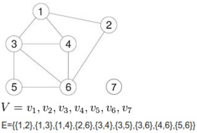
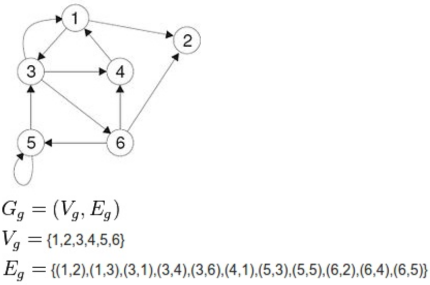
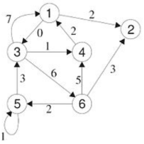
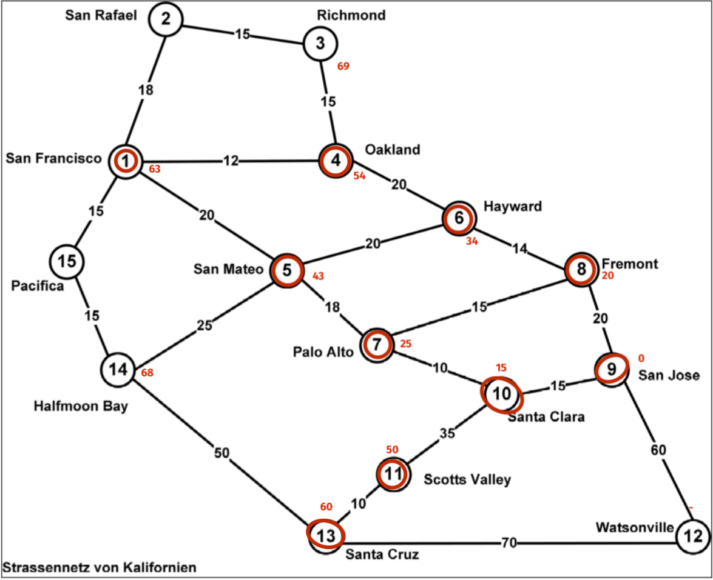
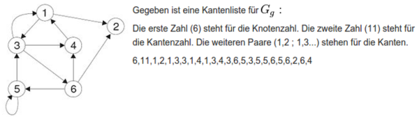
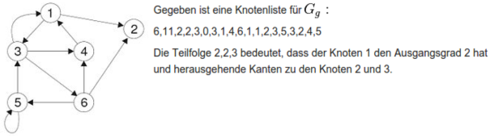
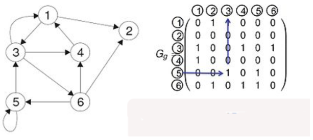
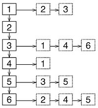

{% extends "../_base_template.html" %}
{% block title %}Lektion 17 - Graphen{% endblock %}

{% block sections %}
<section data-markdown>
<textarea data-template>
<i class="fas fa-graduation-cap"></i> Lektion 17 - Graphen
=============================

**Ziele:**


* Sie wissen, was ein Graph ist und kennen die Begrifflichkeiten rund um Graphen.
* Sie können eine Datenstruktur "Graph" mit Knoten und Kanten implementieren
* Sie kennen den Dijkstra-Algorithmus zum Finden des kürzesten Pfades in einem Graph

</textarea>
</section>

<section data-markdown>
<textarea data-template>
<i class="fas fa-graduation-cap"></i> Graphen
=============================

Ein **Graph** ist das mathematische Modell eines Netzwerks bestehend aus **Kanten** und **Knoten**.

Ein Graph kann verschiedene Ausprägungen haben:

* **Ungerichteter Graph** (bsp: Strassen-Netz, Telefon-Netz): <br />
  Im Ungerichteten Graphen gibt es keine Schlaufen, d.h. keine Kanten, die von einem Knoten zu sich selbst laufen.<br />
  Ausserdem gibt es keine mehrfachen Kanten zwischen zwei Knoten, Parallelkanten genannt.
* **Gerichteter Graph** (bsp: Förderanlage, Kontrollfluss in Programmablauf): <br />
  Bei gerichteten Graphen gilt die Kante nur in eine Richtung. Dafür sind nun Schlaufen und parallele Kanten erlaubt.
* **Gewichteter Graph** (gerichtet UND ungerichtet): Bei gerichteten Graphen haben die Kanten ein "Gewicht": Bsp. die Länge
  einer Strasse, die Geschwindigkeit einer Verbindung, die Kosten eines Weges. <br />
  Ungerichtete gewichtete Graphen kommen zum Beispiel bei der Navigation beim Berechnen des kürzesten Weges zum Einsatz. Gerichtete gewichtete Graphen kommen bei der Optimierung in der Telekommunikation zum Einsatz.

Übrigens sind Bäume und verlinkte Listen ein **Spezialfall** eines Graphen.

</textarea>
</section>

<section data-markdown>
<textarea data-template>
<i class="fas fa-graduation-cap"></i> Graphen
=============================

**Ungerichteter Graph - Darstellung**



* $v_n \in V$ stellt die Knoten (Vertices, V) dar
* E stellt die Kanten (Edges) dar: Dies sind Tupel von Knoten-Indexen (Kante führt von Knoten 1 nach Knoten 2)

Dies könnte z.B. ein Router-Netzwerk darstellen.

</textarea>
</section>

<section data-markdown>
<textarea data-template>
<i class="fas fa-graduation-cap"></i> Graphen
=============================

**Gerichteter Graph - Darstellung**



Auch hier haben wir wieder eine Liste von Knoten (V, Vertices), und Kanten (E, Edges). Dabei gibt die Tupel-Reihenfolge (1,2) gleich
die Richtung vor: von Knoten 1 nach Knoten 2.

Google Page Rank benutzt beispielsweise einen gerichteten Graphen: Welche Webseiten werden von welchen anderen Webseiten verlinkt.

</textarea>
</section>

<section data-markdown>
<textarea data-template>
<i class="fas fa-graduation-cap"></i> Graphen
=============================

**Gewichteter Graph - Darstellung**



Gewichtete Graphen werden immer dort verwendet, wo die Kanten selber eine Information (z.B. Strecke, Kosten, mögliche Geschwindigkeit) beinhalten:
Beispielsweise kann ein Strassen-Netzwerk in den Kanten die Geschwindigkeitsangabe speichern. Dies ist für einen Weg-Finde-Algorithmus
z.B. wichtig, um zu entscheiden, welchen Weg er als "schnellsten" berechnet.
</textarea>
</section>

<section data-markdown>
<textarea data-template>
<i class="fas fa-graduation-cap"></i> Graphen - Anwendung: Kürzeste Route
=============================

**Gewichteter Graph - wir suchen die kürzeste Route von San Jose nach San Francisco **



* Versuchen Sie in 2 Gruppen, einen Algorithmus zum Finden der kürzesten Route zu entwickeln!
* Machen Sie dies auf Papier - ohne Programmcode. Beschreiben Sie Ihr Vorgehen, sodass Sie dies
  später in einen Algorithmus umsetzen könnten!
* Zeigen Sie diesen Algorithmus am Beispiel San Jose nach San Francisco!

</textarea>
</section>

<section data-markdown>
<textarea data-template>
<i class="fas fa-graduation-cap"></i> Graphen - Anwendung: Kürzeste Route
=============================

**Gewichteter Graph - wir suchen die kürzeste Route von San Jose nach San Francisco **


Ein solcher Algorithmus nennt man **Shortest Path Algorithmus**. Dieser berühmte Algorithmus wurde von Edsger W. Dijkstra im Jahre 1956 entwickelt.
Siehe https://en.wikipedia.org/wiki/Dijkstra%27s_algorithm

</textarea>
</section>

<section data-markdown>
<textarea data-template>
<i class="fas fa-graduation-cap"></i> Repräsentation von Graphen - Datenstrukturen
=============================

Für die Implementierung eines Graphen in Java gibt es keine vordefinierten Strukturen. Es gibt aber verschiedene Möglichkeiten, wie
Sie dies relativ einfach tun können:

<i class="far fa-hand-point-right"></i> Siehe auch Inauen-Script zu M411, Kapitel 22.5 - Repräsentation von Graphen
</textarea>
</section>

<section data-markdown>
<textarea data-template>
<i class="fas fa-graduation-cap"></i> Repräsentation von Graphen - Kanten- und Knotenlisten
=============================

Bei durchnummerierten Knoten erfolgt eine einfache Realisierung. Historisch gesehen ist es die erste verwendete Datenstruktur.
Ausserdem ist sie als Austauschformat geeignet und die Auflistung ist nach Knoten oder nach Kanten sortiert.

**Beispiel Kantenliste**



**Beispiel Knotenliste**


</textarea>
</section>

<section data-markdown>
<textarea data-template>
<i class="fas fa-graduation-cap"></i> Repräsentation von Graphen - Adjazenzmatrix
=============================

Adjazenz bedeutet "berühren" oder "aneinandergrenzen". Hier werden Graphen als Werte-Matrizen dargestellt:
Einträge > 0 bedeuten eine Verbindung von Kante zu Kante (der Wert ist gleichzeitig das Gewicht):



Eine Adjazenzmatrix können Sie in Java beispielsweise mit zweidimensionalen Arrays umsetzen:

```java
public class ExampleGraph {
	int[] knoten = {1, 2, 3, 4, 5, 6};
	int[][] kantenmatrix = {
			{0, 1, 1, 0, 0, 0}, // Knoten 1
			{0, 0, 0, 0, 0, 0}, // Knoten 2
			{1, 0, 0, 1, 0, 1}, // Knoten 3
			{1, 0, 0, 0, 0, 0}, // Knoten 4
			{0, 0, 1, 0, 1, 0}, // Knoten 5
			{0, 1, 0, 1, 1, 0}, // Knoten 6
	};
}
```

Dabei stellt der **Zeilenindex** den Ausgangsknoten, der **Spaltenindex** der Zielknoten dar. Der Wert
ist dabei das Gewicht der Kante (0 = keine Kante).
</textarea>
</section>

<section data-markdown>
<textarea data-template>
<i class="fas fa-graduation-cap"></i> Repräsentation von Graphen - Adjazenzliste
=============================

Wir haben eine Liste der Knoten oder alternativ ein Array. Pro Knoten werden die von ihm ausgehenden Kanten als Liste,
welche besonders geeignet für dünn besetzte Matrizen sind, oder als Array von Zeigern dargestellt.
Der Graph wird durch |V|+1 verkettete Listen realisiert. In Adjazenzlisten sind dynamische Erweiterungen im Sinne verketteter Listen erlaubt.
Knotenlisten können natürlich auch als verkettete Listen realisiert werden.
In der Abbildung auf der Seite sehen Sie eine Adjanzliste zum vorherigen Graphenbeispiel.



</textarea>
</section>

<section data-markdown>
<textarea data-template>
<i class="fas fa-graduation-cap"></i> Übungen Graphen - Datenstruktur
=============================

Übung 1 - Grundlegende Datenstruktur

Erstellen Sie folgende Klassen:

* Eine Klasse "Knoten" mit den Eigenschaften:
  * "wert" (String)
  * "besucht" (Boolean, initial: false)
* Eine Klasse "Graph" mit den Eigenschaften:
  * "knoten" (`Knoten[]`)
  * "kantenmatrix" (int[][]): unsere Adjazenzmatrix

</textarea>
</section>


 {% endblock %}
